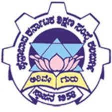

Hyderabad Karnataka Education Society is the prestigious educational institute of Karnataka was established in 1958 by Late Shri. Mahadevappa Rampure to cater to the needs of higher education, especially the medical, engineering pharmacy, law, education, commerce, arts, science and other technical skilled fields. The society in the process of imparting higher education in the backward region of the state has made its impact on the socio-cultural, politico-economic advancement of the region.
HKE Society Logo
The Hyderabad-Karnataka area is comprised of Gulbarga, Bidar and Raichur districts. Multifaceted development programmes are implemented from time to time. Inspired by democratic values, the Society is ably managed by a Board constituting the President, Secretary and 13 other elected members. Each member of the Council is a responsible and knowledgeable person with an immaculate track record. The Society runs 39 educational institutions in various disciplines - Health Sciences, Teaching Hospitals, Technical Institutions, Degree Colleges, Pre-University Colleges, High Schools, Primary Schools, Hostels.